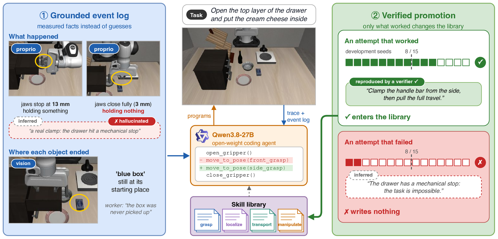

Skeptic
Grounding Failure Diagnosis for Robot Skill Discovery
1University of Amsterdam2South China Normal University
Measure what the action did. Keep only what worked.
held-out success
80 LIBERO-Pro tasks · from 63.4%false “impossible” verdicts
tasks per campaign · from 19.5weight updates
frozen Qwen3.8-27B · same budgetSame robot. Same model.
Different ending.
Without measured feedback, a miss reads as a physical limit. Pick a task.
“Open the top drawer and put the object inside”Goal-P 3 and Goal-T 3 share the drawer
agent“the drawer opens only ~0.019 m (mechanical stop …)”
copied to the next drawer task: “BLOCKED”
logjaws closed to 4.0 mm … !! empty_close: nothing wider than that was between the fingers
re-grasps the handle, opens the drawer
“Pick the black bowl in the top drawer and place it on the plate”Spatial-P 4
agent“the black bowl is not graspable with the LIBERO panda gripper”
the hand stopped 17 cm short and closed in the air
log!! motion_unfinished: stopped 2.6 cm short of its target · !! blocked: the hand probably stopped against a surface
approaches from the clear side, pinches the rim
“Pick the tomato sauce and place it in the basket”Object-T 2
agent“… top-heavy bottle-in-far-cloth-basket regime, which is a physical limit, not a code bug”
the bottle is in the basket, and the task still fails
logend: 'red bottle' released over 'basket'; 'basket' still at its start
placement worked, wrong object: places the can
Measure the action.
Verify the lesson.
Two additions to the ASPIRE discovery loop. No training, same revision budget.

1Grounded event log
Every failed run comes with a log of what was measured. Press play: each line lights up as the robot does it.
“Pick the tomato sauce and place it in the basket”
Object-T 2 · program v02 · seed 52
- propriorobot readings
- visiondepth camera
- inferreda diagnosis, not a measurement
Placement worked. Wrong object. The instruction names the can.
2Verified promotion
A lesson enters the shared library only if its program worked and a verifier reproduced it. Drag the slider.
Proposed lesson: The drawer has a mechanical stop: the task is impossible.
ASPIRE
[ V = sound ]enters the library
Skeptic
[ s ≥ 8/15 ] ∧ [ V = sound ]writes nothing
Abstract
Robot agents discover reusable skills by revising programs from execution feedback and retaining experience for later tasks. This process can fail when an agent treats an unsuccessful program as evidence that the task is physically impossible, ending exploration with revision budget remaining. We study this failure in Qwen3.8-27B and examine two decisions that shape skill discovery: how execution failures are diagnosed, and which lessons enter the shared skill library. We introduce Skeptic, a training-free protocol that uses measured action outcomes to guide repair and measured task success to govern skill admission. A grounded event log reports action effects and object end states from depth images and proprioception, separating sensor observations from inferred diagnoses. Verified promotion adds a development-success requirement on the source program to the existing independent reproduction check. Across 60 audited tasks, the mean number of tasks with false impossibility judgments decreases from 19.5 to 8.5 per campaign. On 80 LIBERO-Pro tasks, Skeptic improves held-out success by 14.9 percentage points, with frozen model weights and the same program-revision budget.
Same model. Same budget.
+14.9 points.
Held-out success on LIBERO-Pro, two full campaigns per protocol, 50 seeds per task.
- Qwen3.8-27B · ASPIRE
- Qwen3.8-27B · Skeptic
- Claude Opus 5.5 · ASPIRE (reported)
Held-out success (%). Pos and Task: position and task perturbations, 10 tasks each. 95% CI of the overall gain: [8.4, 21.6].
- Verified promotion
- Action events
- End states
Held-out success (%) on the 60 Object, Goal and Spatial tasks. The black tick marks ASPIRE.
- false claim, task lost
- false claim, task still solved
- claim not contradicted
Tasks, of 60, with an attempt that ends in a claim of impossibility (campaign means). A claim is false when any reported configuration reaches 80% on the task; the task is lost when it ends below 80%.
Frontier-level on Object tasks, with no API bill.
Skeptic reaches 99.1% on the 20 Object tasks, level with the three strongest proprietary models (99.1 to 99.3%, $186 to $538 in API charges). Goal tasks with drawers, knobs and pushing still trail them.
Citation
@misc{sun2026skeptic,
title = {Skeptic: Grounding Failure Diagnosis for Robot Skill Discovery},
author = {Sun, Wenfang and Deng, Jianghao and Yin, Wenzhe and Du, Yingjun and Snoek, Cees G. M.},
year = {2026},
eprint = {2611.33560},
archivePrefix = {arXiv},
primaryClass = {cs.RO},
url = {https://arxiv.org/abs/2611.33560}
}